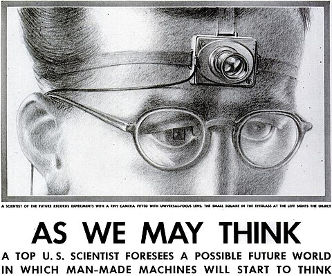
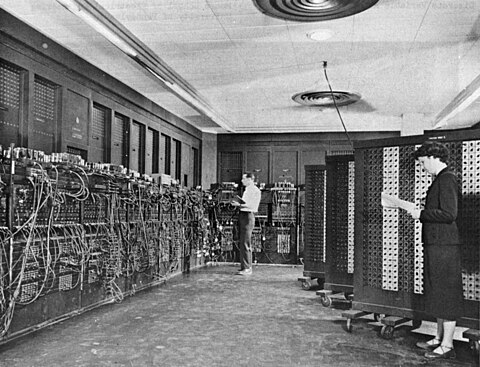
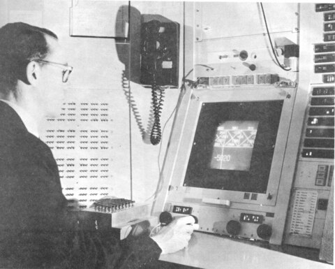
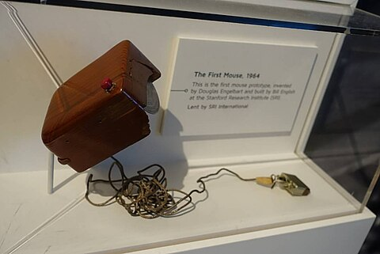

The Architecture
of Interaction
How humans and computers learned to think together. A century of co-evolution traced through behavior, markets, identity, and planetary cost.
The Foundations
Bauhaus Founded
Walter Gropius opens a school in Weimar. Form follows function. Grid systems replace ornament. A rational visual grammar is born that will shape every screen you have ever touched.
Vannevar Bush's Memex
"As We May Think" published in The Atlantic. Bush imagines a desk-sized device that lets scholars follow associative trails through stored knowledge. Hypertext conceived 45 years before the web.

"He designed your browser in 1945."ENIAC
30 tons of vacuum tubes in a Philadelphia basement. The first general-purpose electronic computer shifts calculation from human "computers" (mostly women) to machines. A new kind of labor disappears overnight.

"The first programmers were erased from the story."Cybernetics & SAGE
Humans integrated into digital control loops. Light guns, real-time displays, feedback systems. The air defense network that cost more than the Manhattan Project birthed interactive computing as a side effect.
Man-Computer Symbiosis
J.C.R. Licklider publishes the paper that seeds everything. Not replacement, not tool use, but symbiosis. The human and the computer thinking together, each doing what the other cannot.
The Interface Emerges
Sutherland's Sketchpad
A PhD thesis that invented the future. Draw on a screen with a light pen and the computer understands geometry. The first WYSIWYG. The first direct manipulation. Computing begins to feel like thinking.

"A man touching a screen for the first time."The Mother of All Demos
Douglas Engelbart demonstrates the mouse, hypertext, video conferencing, collaborative editing, and windowed interfaces to a stunned audience in San Francisco. Every interaction you perform today was shown in this 90-minute demo.

"Carved from wood. Used by billions."Xerox Alto & Star
Desktops. Trash cans. Folders. Visual metaphors replace memorized commands. The office migrates onto the screen. Xerox invents the future and then famously fumbles it.
Apple Macintosh
Point and click becomes the norm. Computing enters homes, schools, kitchens. The command line retreats. For the first time, a computer is friendly. The relief is physical.
The Network
The World Wide Web
Tim Berners-Lee writes a proposal his boss labels "Vague but exciting." Clicking a blue underlined word takes you somewhere else. The feeling of infinite possibility. The browser as portal.
Amazon & 1-Click
Jeff Bezos patents removing friction from purchasing. One click and something arrives at your door. The most consequential UX decision in commerce: every barrier removed is revenue gained.
A Harvard dorm room product that learns to monetize human connection. The News Feed, the Like button, the algorithmic sort. Your attention becomes the product. Your identity becomes a performance.
The Pocket
iPhone
Steve Jobs puts a computer in your pocket and you never put it down. Pinch, swipe, tap. The interface becomes your body. Phantom vibration syndrome: your nervous system wired to a rectangle of glass.
Stories & Pokemon GO
Ephemeral sharing. Physical movement for digital rewards. Instagram Stories proves content doesn't need to last. Pokemon GO proves the screen doesn't need to end at the glass.
TikTok
The algorithm doesn't just show you what your friends share. It learns what your eyes linger on and builds a mirror of your unconscious interests. Attention spans compressed to seconds. Identity construction outsourced to a black box.
The Merge
Pandemic
The world goes inside. Zoom hits 300 million daily users. Your living room becomes your office, your school, your bar, your doctor's waiting room. The screen becomes the only window. Essential labor splits along interface access: those who Zoom and those who deliver.
ChatGPT & Stable Diffusion
The text cursor becomes the universal interface. Type what you want and it appears. Users become directors, not operators. The prompt replaces every prior paradigm. Simultaneously: democratized creativity and democratized misinformation.
Sensory Interfaces
Your body already speaks every language a screen can. A one-inch neck patch translates throat muscles into speech with 95% accuracy — no vocal cords needed. A tongue grid lets blind users see through vibration patterns. A wrist camera converts vision into touch on your palm. The screen was always the workaround.
Neuralink: First Human Implant
A chip in Noland Arbaugh's brain lets him move a cursor by thinking. Physical inputs bypassed entirely. Thought to action with no intermediary. Licklider's 1960 symbiosis vision physically realized, 64 years later. The boundary between thought and machine action dissolves.
The Datacenter Crisis
Every interaction on this page required electricity. The global AI infrastructure boom demands 945 terawatt-hours by 2030, roughly 3% of all electricity on Earth. Facilities optimize their efficiency, but volume overwhelms every savings. The river we've been swimming in has a temperature.